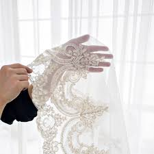
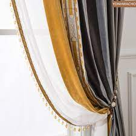
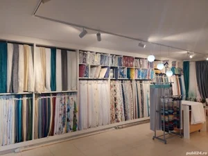
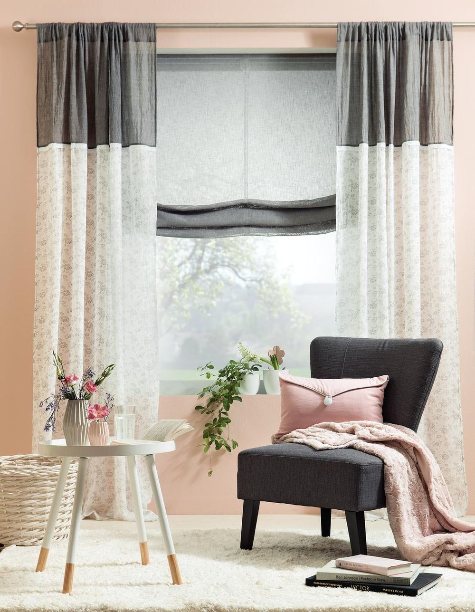
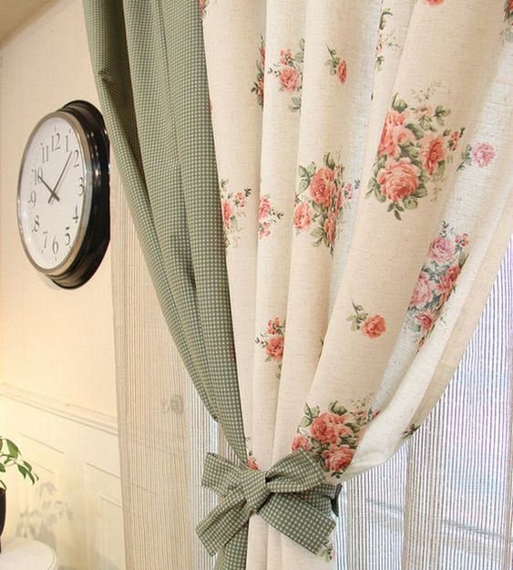
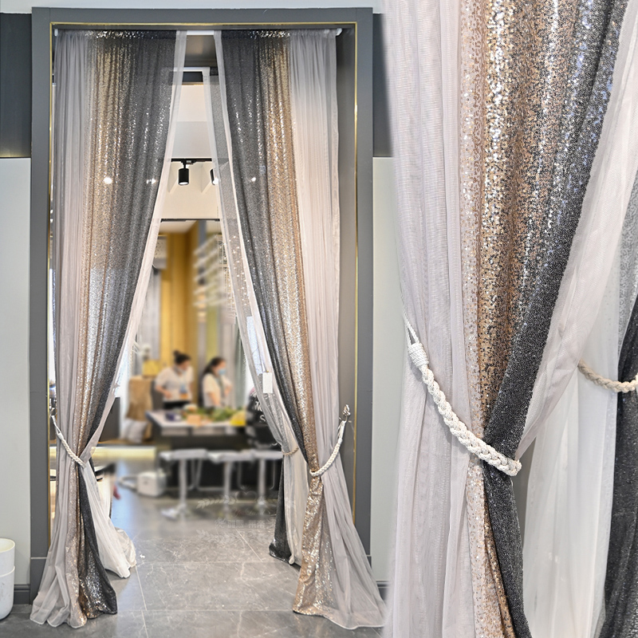
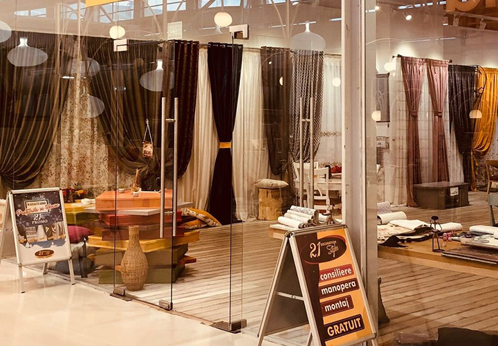

Micile detalii fac diferenta!!!
Locul unde poți da o notă de personalitate ferestrelor tale,
accesorizandu-le cu cele mai frumoase perdele, draperii, rulori,
jaluzele, sisteme de prindere si accesorii.

Clientul nostru, stapanul nostru!!!
Toate materialele alese, au fost atent selecționate de la furnizorii
noștri, pentru a vă putea oferi o gamă variată de modele, texturi și
culori. De asemenea ne dorim să vă oferim cel mai înalt standard de
calitate la cel mai bun pret.
Ambițiile noastre zilnice sunt sprijinite de o cultură bazată pe
încredere și flexibilitate. La noi vei gasi o varietate de perdele
simple sau cu broderii delicate si draperii moderne cu design
minimalist sau design extravagant cu inspiratii clasice. Daca iti
place sa vezi materialele si sa-ti rasfeti simtul tactil cu texturile
fine, porneste intr-o plimbare pe str. Vicoriei si ne gasesti la
numarul 74 in la etaj. Planificam in cel mai mic detaliu ideile tale
de decor si croim personalizat pentru dimensiunile casei tale. La
Lumea Decorului, tinem cont de fiecare detaliu in alegerea acestora:
lumina, cromatica, modele de tesaturi, functionalitatea ferestrelor si
ideea clientului.

Te asteptam pe strada Victoriei nr. 71/etaj cu multa dorinta,
seriozitate, dinamism sa stabilim impreuna disain-ul mult dorit. La
noi vei gasi o varietate de perdele simple sau cu broderii delicate si
draperii moderne cu design minimalist sau design extravagant cu
inspiratii clasice.Acum suntem în plină vară, iar dacă îţi amenajezi
sau renovezi locuinţa precum şi dacă vrei să aduci un aer nou în
locuinţă, în concordanţă cu sezonul cald şi tendinţele actuale
alegerea unor perdele potrivite poate fi soluţia optimă pentru un
design contemporan. Este bine deasemenea să şti că aducerea în context
de perdele, draperii şi materiale textile este cea mai rapidă şi
eficientă variantă de a schimba designul unei încăperi şi de a imprima
un aer fresh, fără ca acest lucru să implice deranj şi cheltuieli
mari.

De-a lungul timpului am renăscut continuu, adaptându-ne necesităților
si dorințele clienților noștri fiind un concept care a rămas mereu
viu. Alaturi de noi, veti reusi sa transpuneti personalitatea,
gusturile si stilul dumneavoastra de viata in decorarea ferestrelor.
Fiind printre primele lucruri pe care le observam intr-o camera, o
alegere inspirata va armoniza intreg spatiul, putand chiar deveni unul
dintre cele mai admirate elemente dintr-o cameră. De asemenea, ajuta
la mascarea eventualelor detalii care nu pot fi integrate în decor,
precum caloriferele. Putem crea iluzii optice de ingustare sau
extindere a unei incaperi prin ajustarea perdelelor si draperiilor in
functie de fiecare spatiu sau forma a ferestrei.

Creăm produse frumoase și de calitate cu dragoste, pentru clienții
noștri un sentiment de armonie și confort atunci când sunt acasă.
Recomandarea pentru acest sezon este pentru perdelele plăcute la
atingere și delicate în culoarea alb unt, care dau senzaţia unei
plăcute adieri de vân. Trebuie să şti că, având o perdea vaporoasă se
poate obține un super efect, acestea putând fi integrate ușor în
diverse modele de design interior Tendinţa actuală în designul de
interior nu este spre un stil anume ci pentru realizarea de combinaţii
reuşite de diverse elemente, acestea luând naştere din materiale şi
texture îndrăzneţe.

Astăzi Lumea Decorului este prima opțiune când e vorba de perdele și
draperii. A fi lider de piață este o responsabilitate mare pe care
ne-o asumăm cu pasiune și multă dăruință pentru munca noastră, facem
acest lucru de 10 ani!!! De-a lungul timpului am reusit sa facem
fericiti clienti, oferindu-le produsele pe care acestia si le doreau.
La noi poti gasii modele in trend. Va asteptam la showroom-ul nostru
pentru a va convinge singuri de transformarea uimitoare a incaperii
dumneavoastra cu ajutorul specialistilor Lumea Decorului.

Lumea Decorului ofera numeroase tipuri de sisteme motorizate
(sine, sisteme romane, panouri japoneze, rulouri si rolete), acestea
fiind adaptate atat pentru proiecte rezidentiale,
cat si pentru spatiile comeriale si de birouri. Iubitorii tuselor
impresioniste, pot alege si o perdea vaporoasa, cu flori albe
delicate. Este important ca atunci cand foloseşti un print sau o
tesatura incarcata, celalalt accesoriu din set, sa fie simplu. Daca
alegeti o draperie florala, atunci o perdea alba simpla, cu siguranta
va completa perfect acest set.